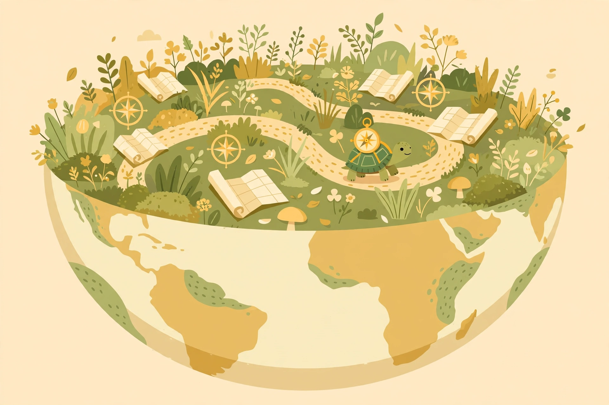
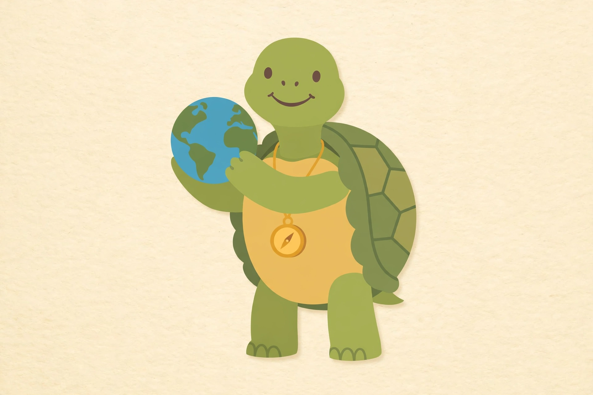

Welcome to the Atlas Garden — a garden growing on top of the whole world, with a path to every place on it.
Meet Terra the Turtle, the mascot of this world.

Signature Earth is Manon’s own planet explorer: spin a 3D globe, search 69,763 real places, measure distances, and take guided tours. The archive holds 17,300 addresses, each with a latitude, a longitude, and a country.
Two working tools, right here on the page. Each one says what it does and what it cannot do. Neither tool reaches the live web, and neither one needs a key.
Enter the latitude and longitude of two places to get the straight-line distance between them, in kilometres and miles. The first address in the archive sits at 50.2179329, 11.132875.
Place 1: lat lon
Place 2: lat lon
Search the 500-place sample on this page by address or country. Shows up to 10 matches.
Search:
Designs, printables, and demos — free, downloadable, usable on the page. Every product is labeled Signature or Fun. Nothing here is for sale.
Printable cards for twelve real places from the archive, with the address, the latitude, the longitude, and the country on each card.
Making: print the printable file on card, cut out the cards, and file them by country.
A paper stand for a small globe, drawn in the Atlas Garden style, with compass roses on the feet.
Making: print the printable file on card, cut along the lines, fold along the marked lines, and glue the tabs.
A poster of the Atlas Garden garden-globe with the winding path, the compass roses, and Terra the Turtle on the trail.
Making: print the printable file and pin it up. The path on it is a drawing, not a route to follow outdoors.
Download all product lines as a printable (text)
Terra the Turtle once walked the whole Atlas Garden path in a single afternoon and still stopped to read every map along the way. The compass says she will finish the garden by Tuesday. (Fun — a made-up tale, not a record.)